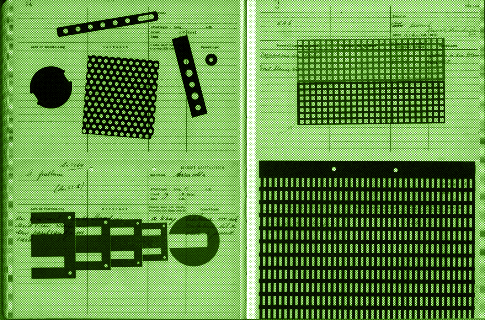
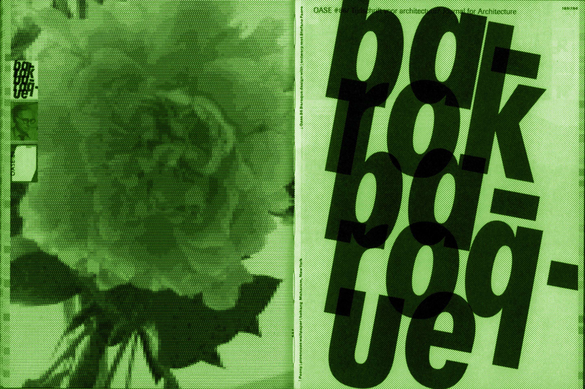
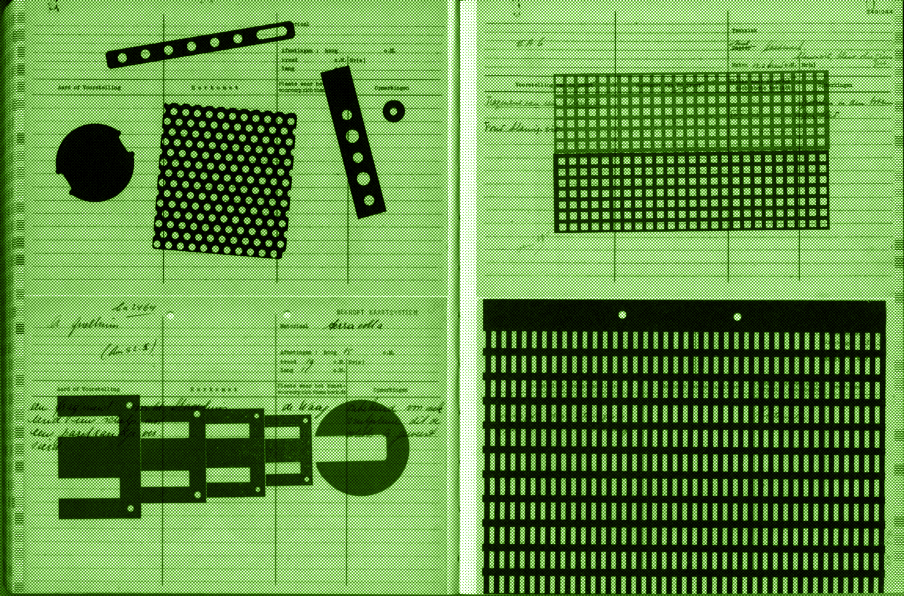
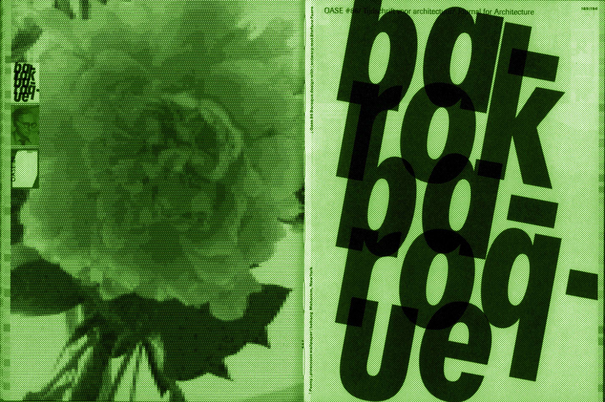
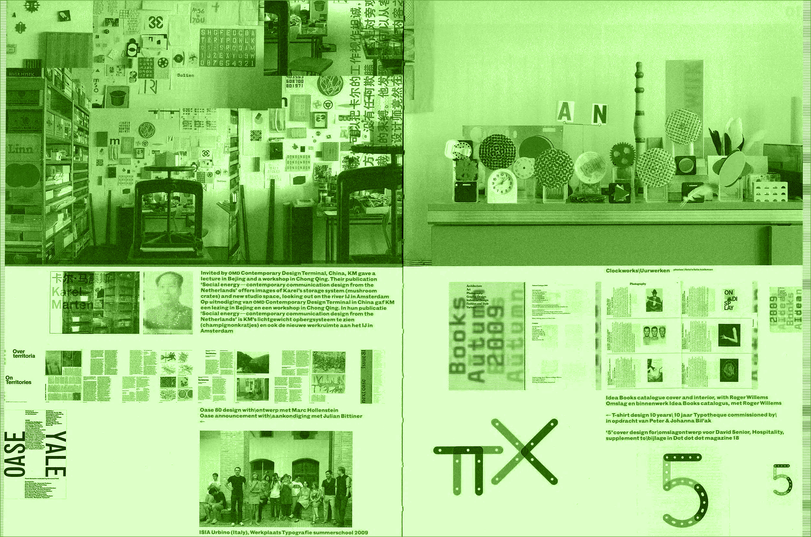
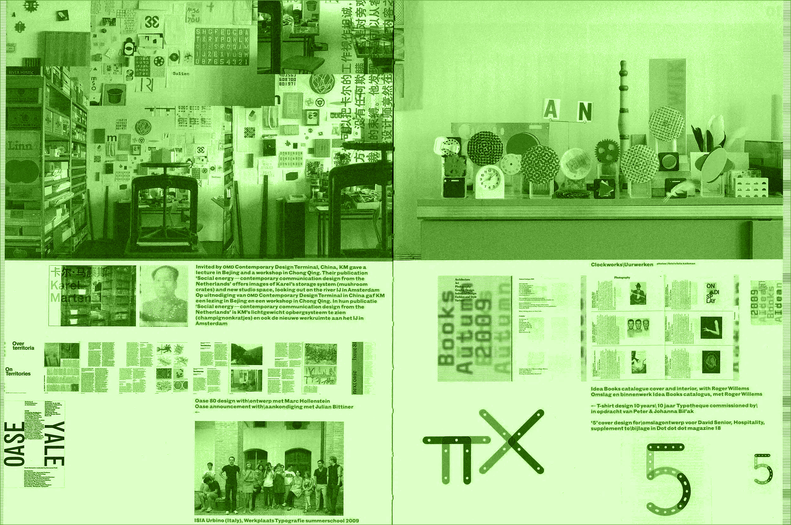

Michael Beirut
Thirteen
Ways
of
Looking
at a Typeface

1. Franklin Gothic by Frutiger in War Is Over! campaign for peace, by Yoko Ono & John Lennon
1. Because it works.
2. Eurostyle Condensed Bold by Aldo Novarese in Helmut Lang perfume ad campaign, Jenny Holzer & Marc Atlan
2. Because you like its history.
3. Tiffany by Edward Benguiat in Bedstuy Records promotional magazine, by Sasha Timplan
3. Because you like its name.
4. Cheltenham by Bertram Goodhue, in Stetson Hats: Spring and Summer 1911 catalog, by unknown
4. Because of who designed it.

5. Univers by Adrian Frutiger, in Visible Language journal, 1975 issue No. 33, by Gert Dumbar
5. Because it was there.
6. ITC Eras, by Albert Boton & Albert Hollenstein, in Communication Graphics, by Wendell C. Crow
6. Because they made you.
7. Futura by Paul Renner, it was the first typeface to land on the moon
7. Because it reminds you of something.
8. Because it's beautiful.
9. Bookman Swash Italic by Milton Glaser, in The Charlie Brown Dictionary, by unkown
9. Because it's ugly.
10. Trade Gothic by Jackson Burke, in the New York Subway Guide, by Massimo Vignelli
10. Because it's boring.
11. Because it's special.
12. Helvetica by Max Alfons Miedinger, in Perpetual Wall Calendar, by Enzo Mari
12. Because you believe in it.
13. ITC Garamond by Tony Stan & Alexander Tarbeev, in Jay Horsth Solitude Tour posters by João Pesce
13. Because you can't not.
“Absence in design is very important”:
Karel Martens on paying attention to the things we don’t see
One of the best-known names in graphic design, the Dutch modernist master and teacher reflects on his work and career to date.
Jyni Ong

 



He may be 81 years old, with a career spanning 60 years and counting, but Karel Martens is still of the mindset that his work can always be better. It’s what drives the self-professed workaholic, he tells us over a video call, and it’s the reason he’s updated his historic monograph several times. Originally published back in 1996, the monograph was an instant classic in its extensive survey of the prolific graphic designer’s career. As well as co-founding the two-year master’s programme at Werkplaats Typografie, with Wigger Bierma in Arnhem, Karel, a central figure in the Dutch modernist movement, seems to have designed it all. Throughout his impressive career he has turned his hand to stamps, coins and films – not to mention every other graphic design staple, from books to corporate identities.
Flicking through his monographs provides a tireless flow of inspiration, including most recently the one published on the cusp of 2020 by Roma Publications. Featuring an open Japanese bind and double-sheeted spreads, this most recent monograph is different to its predecessors for its play with borders, as Karel puts it, an interesting area “where two worlds meet”. A philosophical interpretation for someone more renowned for their technical, more specifically typographic precision. Beyond this distinction with borders, however, which Karel has designed “as close to the edge as possible”, and beyond the visual impressiveness of each comprehensive spread, Re-Printed Matter remains resolute in its detail and beauty. It’s also a testament to Karel Martens’ unyielding and ever-curious approach to creativity.
Karel could have easily developed an ego, so it’s refreshing to hear someone of his stature freely admit that “sometimes you still make the same old stupid mistakes.” It’s this criticality that drives him to keep making work, but that also on the flip side prevents him from looking back at old projects with nostalgia. For him, mistakes give rise to unexpected surprises, especially those made on the computer, a technology established decades into his career. “It can be a nice surprise or not so nice a surprise,” he says, “but by making mistakes, sometimes you feel like, wow, where did that come from?”
There is nothing negative associated with the mistake for Karel. It may be a cliché, but the proof is in the pudding. He’s someone who views no difference between artist and designer (just the label) and through his unique way of seeing, creativity is “all about the person”. By this, he means that creativity is the antithesis of dogma. Making work is “all about trying and discovering” and in his opinion, “there are no truths.” He uses the example of a garden. When creating a garden, the common law dictates that the big plants go at the end and the small ones in front. But what if the other way around is more interesting?
Famous for his sense of experimentation, there are countless projects we could cite now to demonstrate the Dutch master’s way of thinking. We’ll just mention a few that helped cement his reputation for type and print: the design of OASE Journal for Architecture, where Karel explores the relationship between graphic design and architecture, a role he took up in 1990; his well-known symbol generated cloud images, formed by the tight repetition of intricately designed rosettes; and perhaps most infamously, his ongoing work with the Stedelijk’s print collection where he repurposes old archive cards to become diplomas for Werkplaats Typografie graduates.
The list of Karel’s defining projects could go on for a while, and after all, it’s why the monogram exists in multiple iterations. But it’s his lesser-known works that are potentially the most interesting, as they show a different side to the accomplished designer. His experimental film Not For Resale, for instance, shows exactly how a blunder can propel one’s creativity forward. The conversation around the film began as we discussed the development of technology. “How relevant is the latest technology to your work and teachings?” I asked him. “It’s always relevant,” he replied, and hinted to the inundation of new techniques influencing the design canon, adding to the process of experimentation.


“I am from the generation where the computer came to us later in life, even though it’s not that long ago in historical terms. But I am thinking it’s not for me, it’s for the new generations. There is a lot of knowledge that I don’t understand,” he says.
To process this, he made a movie, a way for him to do something with the experience. At the time, he was working on a university lecture and as he always does, he pinned reference images on the wall as an “extension of memory”, an archive of sorts. Karel’s daughter – who incidentally is also a graphic designer – took pictures of the wall, every ten centimetres to make into presentation slides. And after the lecture, a pupil asked to have a copy of the slides, which for Karel, meant using a scanner for the first time.
“So I started making scans of the slides and it ended up being the wrong resolution, the wrong cropping,” he says.
When those first attempts at scans landed on Karel’s computer’s desktop, it was “a mess” – as he puts it, “full of shit, full of the wrong things”.
With help from a technician at the computer lab, hundreds of Karel’s scans suddenly came to life as they were organised in a folder.

“Let me make a movie out of it,” he thought, as he imagined the scans as frames, edited together in an ordered sequence. “It was exciting. And it was also done with new technology.”
Karel isn’t afraid of stepping out his comfort zone, no matter what stage of life. His ability to introduce a new medium by looking at an image from a different angle is just one of the many reasons why his portfolio to date is so diverse. When Karel first launched his career after studying fine art at the Arnhem Academy of Art and Industrial Arts in 1961, the industry was completely different to the screen-based discipline it is today. Back then, he would hand draw type as small as point sizes eight or nine. A far cry from the technological simplicity of today, when you hit a button and a letter appears before you.
For Karel, however, the latter process is more difficult. “I discovered everything through reflecting. There can be a lot of rules in the game,” he says on the act of designing, “but you have to order them and kind of sort them out. I think limitation is an important thing.”
Present technology erases many of the limitations that were present in the pre-Adobe design era. But for Karel, it’s imperative to remember that graphic design was born out of restriction; restriction of what the hands can do with print. So the fundamentals of the art remain much the same for this new era. The process of graphic design can be boiled down to this question posed by Karel:
“How many different elements do you need to tell the story?”
The story doesn’t have to be 100 per cent accurate, though. The designer can “lie a bit” or cut corners in the information they hold back from the viewer. That’s also part of the script – don’t tell the total story so the viewer can hook onto the missing details. In graphic design, the work is outward-facing, for the public.
In some ways, the aim is to engage them and make them feel part of a story mid-climax. As Karel puts it more broadly: “Curiosity is a very important thing for a human being. If you see a book on the shelf, you should become curious. Absence in design is very important, the things you don’t see. But designers can offer a set of ingredients and allude to certain things.”
With so many options readily available nowadays at the click of a button, in Karel’s opinions, a design can feel “too complete”. After all, the computer is mimicking something that was first crafted by the human hand. He expands on this notion of over-completeness: “Too many colours, too many shapes, too many ideas. It is harder but more important to take a small part of [a design] and make it clear as a kind of hesitation, or suggestion.”


Arguably, what Karel is describing is the result of our Instagram-centric design scene today, a medium which calls for instant gratification as you scroll through your feed. In turn, this can lead to an overload of visual stimuli where all the answers are seemingly in one place. By comparison, when Karel started out his career in what he calls “the classical time”, design called for, literally, a more measured approach.
To create a beautiful piece of work, the designer had to centre the text, align the capitals, space each glyph perfectly and so on, all by hand. Of course, doing this on the computer also requires a lot of creative expression and aesthetic sensibility, but it’s a different set of skills. Some could say that modern technology has made the designer “lazier”, but on the other hand, for Karel, it doesn’t make sense to go back to analogue methods. What we have today works for a reason. The past has been done.
In this way, says Karel, “it’s surprising that people are still making classical typefaces.” It would go against his belief in modernism to say otherwise; a school of thought he is famous for and which, above all, embraces the new. Though he makes astute comparisons on how different the industry’s processes are today, he does not claim a preference for one over the other, and respects the creative values of the time. Instead, he merely offers his observations in relation to his own experiences. Like this one: “It’s stupid to make a book in a way that nobody can make anymore. It’s passé, it may be beautiful and it’s still beautiful if it’s repeated. But after the second or third time, I believe you should start something new.”
 



While Karel duly acknowledges that tradition is important, he also points out the necessity of criticality. A designer can still be part of a long tradition while questioning their purpose or process at the same time. Why should something change? If a laborious, drawn-out process no longer offers benefits in its efficiency, economy or concept, then what is it a stylistic expression of? “For me,” says Karel, “that’s the starting point or a kind of measurement.”
He takes the example of the colour black; an undying staple in design. In terms of Eurocentric design history, however, the colour black, in principle, originates from the bible. It was used as a representation of the human voice where there was no reason to give it a colour. Today, “it’s important to have that knowledge in history, so some people can form an argument to change it.” All that being said, as he pointed out later on in a conversation about how designers often play with distinctions, “When all the world is in colour, a black-and-white movie is a relief.”
He’s just as much a teacher as he is a designer in the field. And this is where his remarkable breadth of knowledge comes in handy. Confident in his own opinions and values, as a teacher, Karel prefers to guide students rather than “teach them things” in the definitive sense. It’s a philosophy Werkplaats Typografie was founded on: to guide. If he sees a student who is always making the same kind of thing, perhaps avoiding a certain element of their practice, Karel will say “why not, that’s one of the qualities of your voice. Nice voices don’t necessarily have to be perfect.”
Teaching is “a kind of broad way of gaining information,” he says, explaining that learning is a two-way street between pupil and professor. Every autumn (with the exception of 2020, given the pandemic), Karel usually journeys to New York to lecture at Yale School of Art. He notes the multiculturalism of the student population – people from all over the world, from differing cultures and backgrounds too. And when such a wide-ranging group gathers together in one place, “you can learn a lot.” It goes back to his quintessential view that curiosity is key, as now, for a man who has done so many wonderful things and inspired so many people, he concludes:


“I’m regretting more of the things that I didn’t do in my life than the things that I did.”